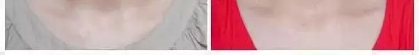
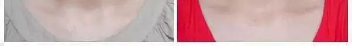
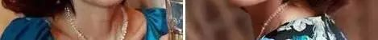
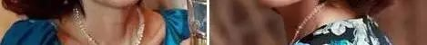

吃什么补血最快，皮肤嫩，衰老慢？就是它
凡是女子病，都与气血有关。气血失和，百病乃变化而生，或将引起各类妇科疾病，如宫寒、四肢冰凉、月经失调、乳腺增生、子宫肌瘤、卵巢囊肿、性功能异常、不孕等症状。中医称之为：血滞病！气血失和还会加速衰老，出现皱纹、色斑、失眠、烦躁、乳房萎缩、皮肤粗糙、欲望低下等症状，必须得抓紧时间调治。
有位权威老中医指出：只有气血平衡充盈，女人才能身心健康，柔美如水！而中医最擅长的就是内脏调理，有些症状常规方法无能为力，但中医对此却有极佳效果！……
实践出真知，深研出权威！刚刚提到的老中医是来自云南呈贡的一名医药研究者阿福婆，今年73岁，她们家是医药世家，到她这已经是第十五代传人了。从老中医18岁开始到现在，也已经是她行医用药的第56个年头。这么多年，她看好的病人不计其数，有云南当地的，还有全国各地慕名而来的。老中医尤其善用“调补气血、滋养卵巢”之法！专治：宫寒、痛经、少经、闭经、崩漏、失眠、长斑、手脚冰凉、乳腺增生、子宫肌瘤、卵巢囊肿、宫寒、不孕、子宫脱垂、卵巢萎缩、阴道干涩、性欲下降、心烦、潮热、盗汗、内分泌失调等更年期综合症以及一些大医院治不好的疑难杂症。
其实，这位老中医之所以能够看好那么多病人，全国其它地方的人能慕名来找她看病，主要是因为她祖上传下来的一味补气血良方，其中有一味最重要的主药——就是
药用玫瑰的品种不同于普通的玫瑰花，种植环境和要求都很高，俗称食用玫瑰。也只有药用玫瑰才具有入药的价值！
古人对药用玫瑰的研究，一直都有记载，《本草纲目》、《本草纲目拾遗》、《神农本草经》中，曾述药用玫瑰具有“行血、补气、明目坚齿、好气色、香身”之功效。
到老中医的祖父那一代，他研究发现，药用玫瑰在含苞待放的时候，所含的补血成分及活性都是最高的，如果在药用玫瑰花蕾期，日出前采摘，半个时辰内入药，效果是最好的！

现代知名医学家吴大真教授（中国保健协会副理事长，从医30多年，一直致力于花对女性保养课题的研究），对于老中医的祖父方子中提到的药用玫瑰，对女性补气血、养颜的功效，也非常认可，曾做客CCTV-4央视频道，详细解读了药用玫瑰美容养颜、补气养血的重要作用。
吴大真教授在亲自撰写的《花养女人，幸福一生》一书中也提到食用级玫瑰花有养血调经、滋润养颜、疏肝理气的功效。她在给病人开的药方中，经常会有一味玫瑰。
但是这个方子却有一个弊端，没办法普及，入药的药用玫瑰，种植条件很苛刻，而且，采摘时要在日出前，采摘后半个时辰必须要入药，不然，功效会大打折扣，以至于老中医祖父临去世之前，都曾遗憾“有此良方，却无法应用于众，生平大憾”！
这位老中医一直也想圆了祖父这个心愿，在2009年，有幸结识了云南白药研究室李主任，决定白药工厂与她合作，共同研发；历时5年时间，在2014年年底，他们成功了！
产品研发出以后，成立了专属公司经规模化、规范化经营玫瑰花鲜素，目前已把玫瑰花鲜素做成方便服用和携带的便携包装，短短1年多的时间，使用产品的人已超过百万，产品的再次使用率超80%以上，一时好评如潮！
如今，老中医的年龄也已经大了，余生剩下的心愿，就是希望更多的女性，能够调理好身体，健康长寿！现在她把这个事业传承给了玫瑰花鲜素团队，团队所有人都非常支持老中医的想法，也希望能够帮助到大家。
玫瑰花鲜素，一个疗程必见效！很多闭经一两年的女性朋友，通过养宫护巢、恢复暖巢功能、平衡内分泌、增加雌激素，都能重新调理回来，推迟绝经期、延缓衰老。通过阿福婆调理成功的女性朋友不仅妇科顽疾消失了，而且使她们皮肤变得细腻光泽、色斑皱纹减少，重新找回了年轻状态！
让月经乖乖来，准时就拜拜
中医认为，月经不调多由气血不调，气血亏虚所致！
1、月经量大、提前多是“气虚”；气不摄血，气不固血，自然提前，量多！
2、量小、延后是“血虚”；体虚血亏不足养，自然经期延后，量小！
3、痛经、有血块是“血淤”。血有余，生内伤，轻则出现黄褐斑、痛经、月经不调，到一定的程度，就会造成乳房胀痛、子宫肌瘤、卵巢囊肿。


因此，阿福婆常说：“凡是女人病，皆是气血虚。凡是容颜老，必是气血淤。”
只要找到月经不调的原因，从源头调补气血，打通气血内循环，调顺女人一身气血，就能达到事半功倍的效果！这也是很多月经不调的朋友，经过乐老师一段时间的膏方调理后，月经每个月准时乖乖的来，乖乖的走，不仅月经准时了，而且脸色红润了，皮肤好了，斑也淡了，就连人也年轻了……
花鲜素效果好不好
看看全国各地网友是如何反馈的


报个年龄、说下自己情况，不需要把脉，花鲜素健康顾问老师）根据你自己的情况补，针对性调理！用过的很多女性朋友都对花鲜素的神奇疗效感到震惊，说不定你就是下一个见证者！
血不养心，就会失眠
刘女士今年33岁，失眠有7-8年了，人显得特别老。气色差，眼袋，皱纹。这是明显的血不养心，时间拖久了，还会得很多慢性病。
她服用玫瑰花鲜素后，才第三天晚上就睡了个整觉，现在喝完两个周期，再也没有失眠过，气色好得不得了，逢人就夸花鲜素让她妙手回春！


 

气不上盈，就会长斑、脱发
林女士生完二胎后，脸上就长出了很多黄褐斑，用多好的化妆品也去不掉，月经也不准，还大把大把的掉头发。一个孩子三桶血，女人生子后气血虚号的太严重，气不上盈，就会长斑。掉头发。
林女士服用两周期的玫瑰花鲜素，色斑就没了，脸上容光焕发的，头发也不掉了，连月经都调好了！黄脸婆变成了小媳妇儿！


妇科炎症，夫妻生活差，男人就出轨
33岁的齐女士，有一次人流经历，从那以后，月经就很少，妇科炎症也反反复复一直不好，有异味，老公都不碰她了。找到老师之前，一直靠吃黄体酮催经，但是效果也不好。人流是件特别伤身体的事情，在花鲜素健康顾问老师的帮助下，齐女士服用玫瑰花鲜素调经养血，活血化瘀。
2周期的花鲜素喝完完，现在齐女士月经正常了，几年的阴道炎也好了，2年多来，老公第一次对她这么亲热！


经血少、闭经，一年老3岁
浙江慈溪的孙女士，今年才42岁，就已经停经了。更年期的她脾气暴躁，动不动就发火，40岁的人，50岁的脸！阿福婆说，女人月经少、闭经，会导致更年期提前，一年至少老3岁。
如果长期月经不调，女人患卵巢囊肿、子宫肌瘤、宫颈癌的几率增大20倍！孙女士服用2周期玫瑰花鲜素后，喝的当月，月经就来了，2周期喝完，孙女士现在看上去年轻了10岁不止，专门给花鲜素团队写了感谢信！
 



女人如花，需要呵护，玫瑰花鲜素健康顾问老师为你解决女人问题！
月经量少、闭经，别等绝经了再后悔
正常的闭经年龄在50—55岁，很多女性40岁不到，就稀稀拉拉的，量很少，常常几个月都不来例假，甚至提前闭经！
四川绵阳的刘女士，今年39岁，因为当时生孩子时坐月子没注意，气血受损，导致产后月经一直都没有准时过，不是提前就是推后，月经量时多时少，每次月经初潮，小肚子坠胀，还伴有手脚冰凉和各种炎症交替来袭，到现在应经有2个多月没来月经，家里的各种洗剂、凝胶，黄体酮等抗生素类药都无效。

最后，通过朋友找到阿福婆老师，阿福婆告诉她：你这情况比较严重，现在开始黄体酮要停，抗生素也不要再吃，调养得分三步走，首先得疏通内循环，将淤积的毒素排出，然后才能调养气血，等月事正常了，最后再巩固！
在刘女士的积极配合下，调理不到两个月后，不仅月经神奇的回来了！同时连一身的妇科病也消失了！刘女士感激之余，亲自找到阿福婆表示感谢！
很多人都是病时悔，千万别等到身体吃不消了，停经了、闭经了再开始后悔！女人如花，需要呵护，
女人"老的快"怎么办？气血充盈不显老
女人最怕什么？老得太快！！人过四十天过午，女人一旦到了40岁以后，气血走下坡路，下行速度快，月经不守时，气色差，脸色暗沉干燥，毛孔大、皮肤松弛、皱纹早衰、黑眼圈眼袋等问题接踵而至。
但是，有些人已经五十岁了，看着好像刚过三十；有些人明明不到四十，看上去却是年过半百的感觉。为什么女人之间会有如此的差异？


女人一到中年造血机能衰退，出现月经不调，经量少，就容易血虚气足，生内火。情绪激动，耗伤津液，造成肾水亏虚，心肾不交，面色无华，严重的血不养心时，还会失眠多梦，烦躁不安！也是我们常说的更年期！而气血调和的女性，自然看起来更年轻美丽！
喝玫瑰花鲜素调气血，气血一天天充盈起来，首先是睡好觉了，大便通畅了，心情舒畅了，经过一段时间的调理，脸色明显红润很多，皮肤变亮了，也不整天唉声叹气了，浑身气血足，精、气、神又回来了，就像换了一个人，比同龄人显得年轻！
如今，年过七旬的阿福婆仅用短短2年时间，已成功帮助3万余名妇科病女性恢复健康，而且使她们皮肤变得细腻光泽、色斑皱纹减少，重新找回了年轻状态，评价甚高。！
阿福婆提醒，如果您出现以下情况：各类色斑，眼袋，黑眼圈，脱发，白发，乳房胀痛，畏寒脚冷，腰痛腿软，疲乏无力，胸闷气短，失眠多梦，心烦气躁，眩晕耳鸣，潮热多汗，经期不规律，经血少，经血多，闭经，痛经，腰酸腹痛，阴道干涩，便秘，尿频现象，别怕，找玫瑰花鲜素健康顾问老师给你指点迷津。
特别提示：咨询人多，添加微信后，请留言说明年龄，症状，玫瑰花鲜素健康顾问老师会按咨询顺序回复！
玫瑰花鲜素健康顾问老师建议广大女性朋友，不要化妆品专挑贵的买，美容院专挑贵的去，女人的美不是化妆品画出来的，不是名牌服装穿出来的，更不是用整形手术做出来的，女人的美是由内而外散发出来的，调女人一身气血，打通女人内循环，上养颜，中润巢，下调经。

为了响应广大女同胞们的要求，让所有的女性朋友都能喝到优质的花鲜素，现在我将优质花鲜素的鉴别技巧传授给大家：
玫瑰花鲜素，它是保持玫瑰花艳丽生长的一种精华成分，之于玫瑰花就如同血液之于人体一样，具有美容养颜、补气养血的作用。经过加热浸提萃取技术和物理超滤技术提取出来，这与中国科学家屠呦呦教授从黄花蒿中萃取的青蒿素有异曲同工之妙。

简单的食用黄花蒿，并不能治疗疟疾，需要从黄花蒿中通过乙醚浸提法和溶剂汽油浸提法，萃取出的青蒿素才可以达到有效的治疗的作用。

同样的，不管是新鲜的食用玫瑰，还是食用玫瑰浅加工的产品，都不可能具有快速补气养血，美容养颜的效果，只有通过加热浸提萃取技术，萃取出食用玫瑰花花蕾中的精华成分 —— 玫瑰花鲜素，才可以很好的补气养血，美容养颜。
10000杯的玫瑰花茶营养抵不过5g的玫瑰花鲜素精华！通过核心工艺萃取的玫瑰花精华，才是人体所需的营养成分。
玫瑰花鲜素不等同于简单的烘干、粉碎、鲜榨，单独的冲泡玫瑰花茶、喝玫瑰花汁或者浅加工的玫瑰花产品并不能起到美容养颜的作用，需要通过浸提萃取出玫瑰花中的精华：玫瑰花鲜素，才能有效内在养容颜、补气血，进而起到滋养皮肤的作用。
1、原料天然

云南高原3000亩食用级玫瑰庄园，清晨采摘含有露珠的新鲜玫瑰花花蕾。并在1小时内运输到工厂进行初级的加工提纯处理。
2、古法萃取
玫瑰花鲜素的萃取工艺，最早是源自云南少数民族老一辈们口口相传的的古法技艺，之后被全国顶级的植物提取物研究机构历时5年的探索研究，形成两项核心科技：加热浸提萃取技术和物理超滤技术，成为制作玫瑰花鲜素经典之作，目前已向国家申请专利。
3、制药标准
全球先进的提纯生产线，由云南白药伙伴工厂以制药标准生产的鲜花养颜补品。全程天然萃取、零添加，不含香精、色素、防腐剂、抗氧化剂等。
4、严苛检验
（1）玫瑰花鲜素属于新资源食品，由食品药品监督管理局颁发食品流通许可证。区别于保健品和食品，是比食品具有更高的营养价值，比保健品更具有广泛的适用人群！

（2）玫瑰花鲜素通过中国国检全项9大项38小项质量检测，全项检测优级！
（3）铝箔袋——我们都采用以制药标准生产的真空包装，这种包装无毒、无味、防潮、遮光、更安全，更易保存。
5、效果突出

给女性朋友带来福音，调理月经不调、改善痛经、停经等，以及因为气血不足导致的内分泌失调、皮肤暗黄、长斑、长痘等。
 7257
7257
看起来很不错的样子，管不管用先加上看看吧，不差试这一次了
昨天楼主回复
试试吧，确实管用，看我就知道啦，别说你们了，我姐现在天天和我抢着喝玫瑰饮
114
默默的已经加上，把朋友圈翻了一遍的举手
昨天 558
558
我月经不调好多年，喝了2个半月，好了！
昨天楼主回复
我爱人提前停经，只拿了2个周期，喝回来了！
 658
658
感谢主编，月经不调这事困扰好多年了，我刚咨询了下健康顾问，在微信上已经订购，谢谢！
昨天 358
358
我能说之前已经看过花鲜素的文章，已经加上，月经不调和色斑都已经好了么，太激动了！！！
昨天楼主回复
啥都不说了，姐妹，大家都懂此刻激动的心情！！！
265
是不是这么管用啊，表示已经3年没有来月经了，真的好苦恼啊！已加健康顾问微信，等会咨询下，行的话我也买来试试。
昨天 122
122
如果管用，我一定要好好感谢玫瑰花鲜素！
昨天楼主回复
我自己吃过，绝对效果好，不过就是有点小贵！但一分钱一分货。
 187
187
看完还是挺有收获的，我来加微信问问。
昨天 167
167
前天咨询过，我是经量少的问题,已经拿了一个周期试服。等待效果。
昨天楼主回复
看来你真是选对了~~期待你的好消息！
239
话说还可以，我老姐之前也买过花鲜素，不过买了3个周期，最后只喝了2个半周期，还剩半个周期没吃完，就好了。。。
昨天 196
为啥我加健康顾问微信还没通过。。。。
昨天楼主回复
可能太忙了吧，再等等就通过了~~
 145
145
想知道我30岁不孕，用玫瑰花鲜素能调好吗？
昨天 336
336
楼上的朋友，咱俩情况很像啊，我用了花鲜素，调理了半年，现在宝宝6个月了！
昨天 123
试过好多方法了，都不管用，纠结，算了先加上试试吧
昨天楼主回复
别灰心了，我的这情况都可以，你还纠结啥
 397
397
愿意用所有的才华换健康的身体
昨天 102
102
555555都是青春啊，青春自从生了我家宝宝，直接步入大妈级啊，我也去看看，希望花鲜素能拯救我
昨天